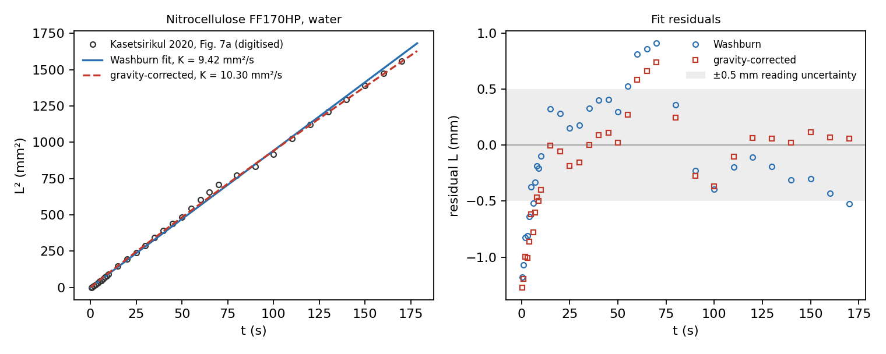
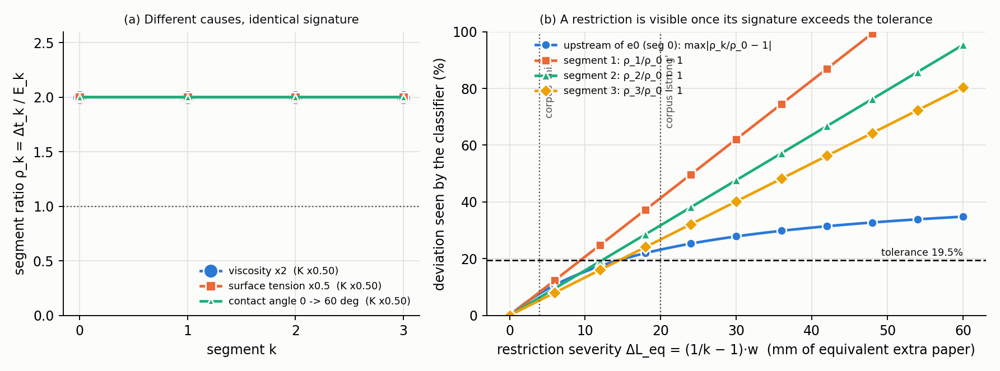
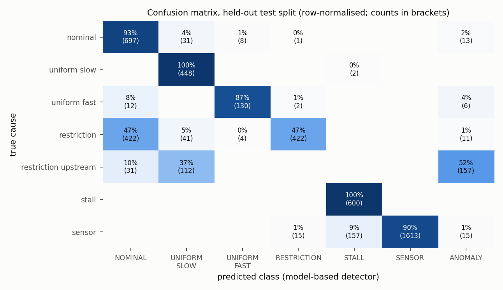
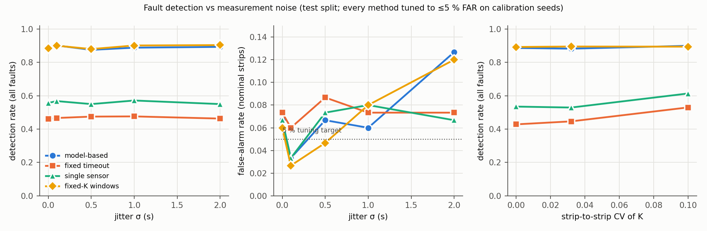
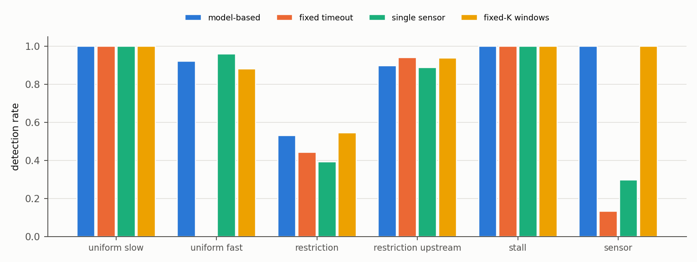
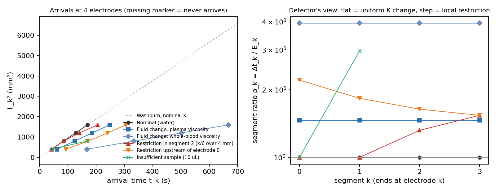
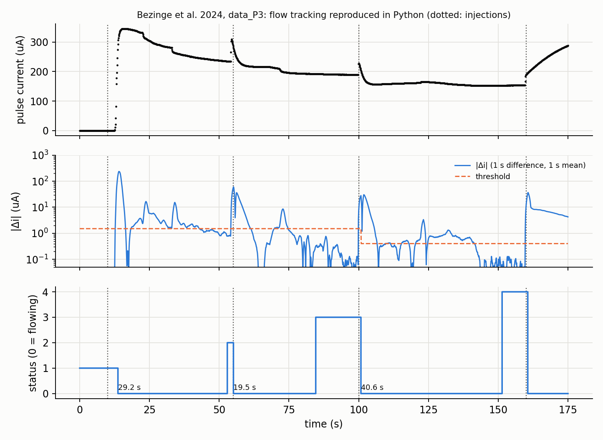

Capillary Fault Classifier
Four electrodes along a paper strip time the arrival of the liquid front. A calibrated capillary-flow model then tells which kind of filling fault happened, and where. The detector is built as FPGA hardware and verified against an independent software model.
Status at a glance
| Phase | Goal | Result | Command |
|---|---|---|---|
| 0 | Plan, environment, architecture choice | done PLAN.md approved | — |
| — | One-page proposal PDF (due 1 Nov) | placeholders group number and names missing | proposal/make_proposal.py |
| 1 | Tracer bullet: thinnest end-to-end path | pass | run.py phase1 |
| 2 | Physics, calibration, scaling | pass 7/7 generator checks | run.py phase2 |
| 3 | Golden model, baselines, corpus, metrics | pass | run.py phase3 |
| 4 | RTL, full regression, synthesis | pass bit-exact, timing met | run.py phase4 |
| 5 | Assertions, coverage, boundary cases | pass one fix in the coverage model not yet compiled | run.py phase5 |
| 6 | Real electrode data (Bezinge 2024) | pass 3/3 flow times inside the paper's ranges | run.py phase6 |
| 7 | Optional PYNQ-Z2 board demo | not started | — |
| 8 | Report assets and draft | pass | run.py phase8 |
System overview
The work has two halves. The physics half produces realistic test data and a reference answer for every case. The hardware half implements the detector and is checked case by case against that reference. A separate real-data branch checks the timing assumptions against published measurements.
Dashed blue: the fixed-point reference model supplies the expected answer for every RTL run.
What was done, phase by phase
Phase 0 · Plan and environment
- Tools found. Python 3.12 (run as
py -3.12; the barepythonis a Windows Store stub), NumPy, SciPy and Matplotlib, and Vivado 2022.2 (xsim, xcrg, synthesis) with the PYNQ-Z2 board files. Not present: git, MATLAB and Octave. iverilog exists in WSL but cannot run SystemVerilog assertions or covergroups, so it was not used. - Architecture chosen. Digital arrival lines, one per electrode ("interface A"). The detector tests each segment's fill time for consistency against an online estimate of K, using cross-multiplication. Rejected alternatives: fixed absolute windows (detects, but barely classifies), and a sampled-signal front end ("interface B": more work, and the only real data is single-electrode).
- Plan.
PLAN.md, approved with default geometry: 4 electrodes on a 40 mm strip, spaced uniformly in L².
Proposal PDF
proposal/BioMEMS_Project_GroupX_Proposal.pdf: one A4 page built with ReportLab from the handoff text, with a physics section and a timeline. It has placeholders for the group number and member names; regenerate with py -3.12 proposal/make_proposal.py --group N --members "…". References 2–4 were cited from memory; verify them before submitting.
Phase 1 · Tracer bullet
One command ran the whole chain, generator to reference model to RTL in xsim to comparison, on three scenarios, and passed. It surfaced the first physics finding: a mild restriction is flagged one segment late, because its extra resistance persists downstream.
Two Windows problems were fixed along the way. The project path contains spaces, and cmd.exe splits arguments on =, which breaks xsim's plusargs. The testbench therefore reads fixed file names in its working directory.
Phase 2 · Physics and calibration
- Data. Publisher pages (PMC, ACS, RSC) block automated access. The open MDPI paper by Kasetsirikul et al. 2020 (CC BY) was used: 33 points read by eye from its Fig. 7a.
- Fit. K = 9.42 mm²/s, matching the paper's own fit (9.73) and the product rating (9.41). A gravity-corrected fit gives +9 %, kept as a systematic uncertainty.
- Generator. Rebuilt as quasi-steady Darcy flow with piecewise permeability and width, finite sample volume, and creep after the sample runs out, plus a sensor model.
- Scaling table. Built with bracketed effective pore radii, because no paper reports this membrane's pore size.
- Finding. A restriction upstream of the first electrode is not always invisible. It produces a decreasing ratio pattern.
Phase 3 · Reference model, baselines, metrics
- Corpus. 9,900 scenarios: 29 fault scenarios × 5 jitter levels × 3 strip-variability levels × 20 seeds, with 100 seeds for nominal strips. Split into calibration and test halves.
- Tolerances. Tuned by grid search on the calibration half for ≤ 5 % false alarms; every metric is reported on the test half.
- Two spec changes (SPEC v0.2). The uniform-K test moved to the total fill time, raising fast-fluid detection from 47 % to 92 %. A first-segment plausibility floor was added, which removed false STALLs caused by spurious early triggers.
Phase 4 · RTL and synthesis
- Problem. At 8 clocks per tick, the corpus needed about 10¹⁰ simulated cycles. The design was rebuilt so that decisions depend only on captured timestamps, never on clock timing. The testbench can then run one tick per clock.
- Regression. Run in parallel shards: 9,900/9,900 bit-exact.
- Timing fix. The first place-and-route missed 100 MHz by 8 ns (a 36-level combinational scan). The scan became a multi-clock walk over a snapshot, and it now meets timing with 3.72 ns of slack.
Phase 5 · Assertions, coverage, boundary cases
- Checks. White-box assertions and covergroups live in
tb/detector_core_checks.svh, which is compiled for simulation only. - Boundary suite. 52 directed cases sit on, or one tick beside, every decision boundary. Each carries an intent check against the reference model.
- Mutation test. Six deliberately broken RTL copies. The first version of the assertions missed two; both were strengthened, and now all 6 are caught.
- Incident. Running 12 simulators at once with assertions enabled exhausted the machine's memory, and the system crashed. Parallel runs are now capped at 4 (
SIM_JOBS), and by default Phase 5 uses one simulator process. - Coverage report. xcrg also split paths at spaces; it now uses relative paths. A bin-range quirk in xsim made one coverpoint misreport 33.6 %. The real coverage was recovered from the hit values (17/17), and the bin definition was rewritten. The rewrite has not yet been compiled.
Phase 6 · Real electrode data
The dataset is not reachable automatically; the publisher pages are bot-checked and ETH rate-limited the requests. You supplied the authors' files (Mendeley Data, doi:10.17632/nd9cyw62rk.1), which were copied unmodified with checksums. Their MATLAB flow tracking was ported line by line to Python and checked against an analytic step response. All four injections were detected, and the three completed flow times fall inside the paper's reported ranges.
Phase 8 · Report assets
Identifiability computed rather than asserted (§5), a generated identifiability table, and report/REPORT_DRAFT.md, written physics first with ten limitations.
Physics model
The electrodes are spaced so that L² steps evenly (20² = 400, 28.3² = 800, 34.6² = 1200, 40² = 1600 mm²). Under Washburn flow every segment then takes the same time, E = 42.5 s for water.
Equations
Washburn: L² = K·t, K = γ r cosθ / (2μ) Expected segment time: E_k = (L_k² − L_{k−1}²) / K Generator (Darcy, series resistance): dL/dt = (K/2) / ( w(L) · ∫₀ᴸ dx / (k(x)·w(x)) )Here γ is surface tension, r an effective pore radius, θ the contact angle, μ the viscosity, k the relative permeability and w the relative width. With k = w = 1 the generator reduces exactly to Washburn. It also adds a finite sample volume, creep after the sample runs out, fluid scaling, strip-to-strip variability of K, a detection lag, timing jitter, and missed, spurious or stuck electrodes.
Calibration

| Quantity | Value | Source |
|---|---|---|
| K, Washburn fit | 9.42 mm²/s | this work |
| K from the paper's fit p² | 9.73 mm²/s | Kasetsirikul 2020, Table 6 |
| K from the product rating (4 cm in 170 s) | 9.41 mm²/s | Kasetsirikul 2020, App. A |
| Gravity-corrected K | 10.3 mm²/s (+9 %) | this work; kept as a systematic uncertainty |
| Strip-to-strip CV of K | 3.2 % | Table 6 widths; 10 % upper case from Patari 2020 |
| Detection lag | 1.8 s | Bezinge 2024, confirmed in Phase 6 |
Scaling: which forces matter
| Number | Compares | Range | Conclusion |
|---|---|---|---|
| Bond (pore) | gravity vs capillarity | 7×10⁻⁹ – 5×10⁻⁴ | capillarity sets the meniscus |
| Capillary | viscous vs surface forces | 1×10⁻⁶ – 3×10⁻⁵ | quasi-static capillary pressure |
| Reynolds (pore) | inertia vs viscosity | 3×10⁻⁵ – 0.16 | slow viscous (Darcy) flow |
| Inertial time | how long inertia matters | ≤ 0.53 ms | shorter than one 1 ms tick |
Each range spans the two effective pore radii, 0.23 µm and 61 µm, which bracket the unknown pore size.
Identifiability: what the timings can and cannot tell
The detector sees only the segment ratios ρ_k = Δt_k / E_k: how much slower each segment filled than water would. Two consequences were computed directly.

| Fault | Signature | Identifiable? | Evidence (test split) |
|---|---|---|---|
| Fluid-property change | all ρ equal, ≠ 1 | class yes property no | slow fluids → UNIFORM_SLOW 100 %; warm water → UNIFORM_FAST 87 % |
| Restriction, segment ≥ 1 | ρ steps up at that segment | yes + location above 10–15 mm | strong (20 mm): detected 94 %, right segment 90 %; mild (4 mm): 13 % |
| Restriction upstream of e0 | ρ_k/ρ_0 decreasing | partly | ANOMALY 52 %, UNIFORM_SLOW 37 %, NOMINAL 10 % |
| Insufficient volume (stall) | later electrodes never fire | yes + gap | 100 % correct class and gap |
| Sensor fault | impossible order or timing | usually index ambiguous | flagged 100 %, SENSOR 90 %, right electrode 65 % |
| K change inside the strip spread | flat, within ±14.8 % | no by design | the band absorbs 3–10 % batch spread and the +9 % calibration systematic |
Detector algorithm
Online K. r̂ = Δt_0/E_0 is the sample's own slowness, measured on the first segment. Later windows scale with r̂, so a viscous but healthy sample is not mistaken for a stall. This per-stage, model-derived window is what lets the detector say where the front stopped; a fixed timeout cannot.
Cross-multiplication. Every test compares integer products, such as Δt_k·E_0·256 against Δt_0·E_k·(256 + TOL). There are no divisions and no rounding, which is why the hardware can match the reference model exactly.
| Parameter | Value | Meaning | Origin |
|---|---|---|---|
| TOL | 50/256 = 19.5 % | segment-to-segment consistency | tuned on calibration seeds |
| TOL_ABS | 38/256 = 14.8 % | nominal band on the total fill time | tuned on calibration seeds |
| TOL_STALL | 512/256 → ×3 | stage window = r̂·E_k·3 | design choice |
| FIRST_Q | 1280/256 → ×5 | longest first segment (blood ≈ 3.9× water) | design choice |
| MIN_FIRST_Q | 128/256 → ×0.5 | fastest plausible first segment | physics: warm water is 1.29× |
| Tick, timestamp width | 1 ms, 24 bit | 4.7 h range; worst undecided run is 2.1×10⁶ ticks | design choice, proven bound |
Results (held-out test split, 4,950 scenarios)
| Method | Faults detected | False alarms | Classifies? |
|---|---|---|---|
| Model-based (this work) | 88.9 % | 7.1 % | cause + location |
| Fixed timeout on the last electrode | 46.8 % | 7.3 % | no |
| Single sensor, end time inside a window | 55.9 % | 6.4 % | no |
| Same 4 electrodes, fixed windows (ablation) | 89.4 % | 6.7 % | no |



| Median time to decision | Model-based | Fixed timeout |
|---|---|---|
| Nominal strip | 172 s | 172 s |
| Stall | 212 s | 188 s |
| Sensor fault | 31 s | 172 s |
| Viscous sample (uniform slow) | 342 s | 188 s |

Real-data check (Bezinge et al. 2024)
The authors' published run, data_P3.csv, is a vertical-flow device with one electrode cell receiving four injections. Their flow-tracking algorithm was ported line by line to Python (realdata/bezinge_flow.py). It works from the current difference between pulses one second apart, averaged over one second: 10 samples above threshold mean flow, and 100 samples below mean a stop.

| Step (inferred from the assay order) | Reproduced | Paper median (IQR) | Inside IQR |
|---|---|---|---|
| Serum sample, 100 µL | 29.2 s | 30 (29–39) s | yes |
| Labelling solution, 100 µL | 19.5 s | 22 (17–32) s | yes |
| Rinse buffer, 150 µL | 40.6 s | 31 (28–41) s | yes |
The paper's agreement with visual timing (+1.8 s bias, IQR −0.1 to 2.5 s) confirms the generator's lag parameter. It also implies about 1.4 s of jitter per detected event, inside the 0–2 s range simulated.
Hardware design
Why timestamps only. The sequencer decides from captured timestamps alone. It treats an arrival as final once no glitch filter is pending and the clock has moved past it, and a timeout as final once the window has expired at a sampled time, since a later sample can only be more expired. Its answer is therefore the same however many clock cycles pass per tick, and however long the multiplier takes. That is what let the regression run one tick per clock, about 10⁵× faster than real time.
| Implementation (xc7z020, out-of-context, Vivado 2022.2) | Value |
|---|---|
| Slice LUTs | 535 (1.0 %) |
| Flip-flops | 674 (0.6 %) |
| DSP48E1 / Block RAM | 3 / 0 |
| Timing at 100 MHz | WNS +3.72 ns → Fmax ≈ 159 MHz |
| Power (vectorless estimate) | 46 mW total, 6 mW dynamic |
Verification
| Check | Result |
|---|---|
| Full corpus, RTL vs fixed-point reference model | 9,900 / 9,900 1.68×10⁹ ticks simulated |
| Float vs fixed-point reference models | 100 % agreement |
| Boundary suite (window edges, tolerance edges, ties, back-to-back, glitches 1/3/4 clocks, high before arm) | 52 / 52 |
| Assertions: legal transitions, one result per run, monotonic time, glitch-filter rule, no result before its evidence, no result built on a rejected arrival | 0 failures |
| Functional coverage: states, transitions, boundary events, result class × location | 16/16 · 30/30 · 9/9 · 17/17 |
| Mutation test: 6 deliberately broken RTL copies | 6 / 6 caught after two assertions were strengthened |
| Timestamp counter saturation | unreachable worst case 2.1×10⁶ of 1.7×10⁷ ticks |
Decisions and changes from the handoff
| Topic | Handoff assumed | What we did, and why |
|---|---|---|
| Calibration paper | Mendez 2010 / Fu 2011 | Kasetsirikul 2020: the only open paper with a usable lateral-membrane curve. The others are bot-blocked. |
| Upstream restriction | never distinguishable | distinguishable above ~15 mm (non-Washburn pattern); weak ones hide |
| Uniform-K test | first segment | total fill time (SPEC v0.2): the detection lag matters less |
| Sensor check | ordering only | adds a first-segment plausibility floor (0.5× nominal) |
| RTL timing | counter + windows | input capture + timestamp-only decisions, enabling fast verification |
| Formal check | optional | no formal tool installed; mutation testing used instead |
| Octave | run plotResults.m | not installed; a line-by-line Python port checked against an analytic step response |
| Interface B, PYNQ demo | optional | not done: single-electrode data; time budget |
Files and commands
py -3.12 run.py phase1 # tracer: 3 scenarios through xsim py -3.12 run.py phase2 # calibration, scaling, generator checks py -3.12 run.py phase3 # corpus, tuning, baselines, metrics (Python only) py -3.12 run.py phase4 # full RTL regression (SIM_JOBS parallel xsim) + Vivado py -3.12 run.py phase5 # boundary suite, assertions, coverage (one xsim process) py -3.12 run.py phase5-mutants # mutation test (SIM_JOBS at a time) py -3.12 run.py phase6 # Bezinge real-data reproduction (Python only) py -3.12 run.py phase8 # identifiability assets + asset check (Python only)
| Path | Contents |
|---|---|
PLAN.md, SPEC.md | approved plan with a status log; the detector specification that both models and the RTL follow |
physics/ | parameters with sources, calibration, Darcy generator, sensor model, scaling |
scenarios/ | corpus, boundary cases, tracer |
golden/ | float and fixed-point reference models, baselines, evaluation, identifiability, figures |
rtl/, tb/, syn/ | SystemVerilog design, testbench and checks, Vivado script and constraints |
realdata/, data/ | Bezinge port and comparison; literature and real data with provenance |
results/ | all generated figures and tables |
report/REPORT_DRAFT.md | results report draft |
proposal/ | one-page proposal generator and PDF |
Limitations and open items
- Calibration. From a vertical-rise figure read by eye (±0.5 mm), for one membrane with water; +9 % gravity systematic.
- Real data. One run of a single-electrode vertical-flow device; it validates event timing only.
- Physics limits. The fluid property cannot be named; weak upstream restrictions look like slow fluids; restrictions below ~10–15 mm are missed; a sensor fault's electrode index is ambiguous.
- False alarms. 6–13 % at realistic jitter: too high for a clinical device without better timing.
- Latency. A viscous sample is classified only after its last arrival (median 342 s).
- Assumed values. Sample volume 25 µL, creep 20 s, electrode positions, textbook viscosities.
- Hardware. Out-of-context timing and vectorless power only; the design has not run on the board; interface A assumes off-chip comparators.
- Open items.
- The proposal PDF has placeholder names.
- The Mendez 2010 citation hasn't been checked against the paper.
- The rewritten coverage bins have not yet been compiled.
- The final report format is unknown.
- The dataset licence was not checked (your decision).